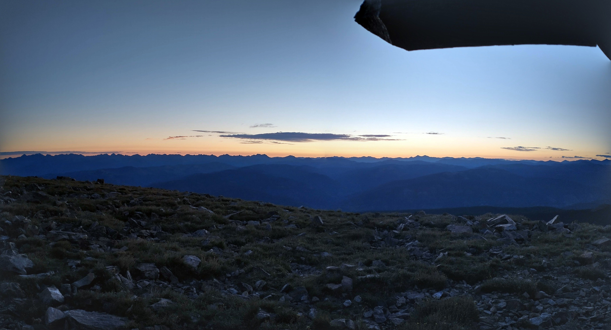
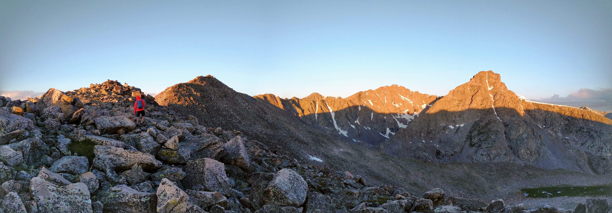
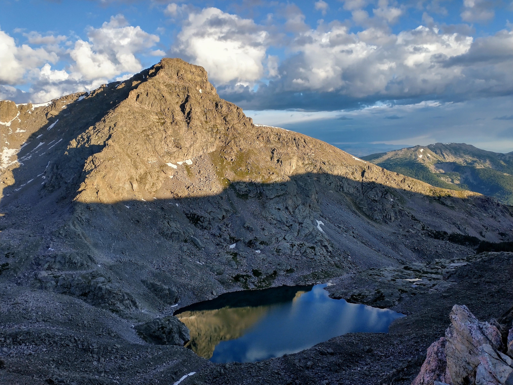

Mount of the Holy Cross via Halo Ridge
Date: 08/05/2023
Start Time: 03:25
Distance: 13.2 Miles
Elevation Gain: 5,347 ft
End Time: 15:04
RT Time: 11:39 (oof we slooow)
At the shelter, moments before dawn
We got to the ridge crest just before sunrise to catch this
 Prima luce, facing East
Prima luce, facing East
Beautiful view of the Bowl of Tears
 Gavin heading up the traverse
Gavin heading up the traverse
 Lovely ridgeline to the West
Lovely ridgeline to the West
 I just think this looks cool so here it is
I just think this looks cool so here it is
 Summit! This marker is a bit beat up though
Summit! This marker is a bit beat up though
 Summit view
Summit view
 Yay
Yay
 If you think to yourself - wow that's good image color - that's because it's not my phone, it's an Iphone lol
If you think to yourself - wow that's good image color - that's because it's not my phone, it's an Iphone lol
 View of Holy Cross near the last ridge before heading all the way down
View of Holy Cross near the last ridge before heading all the way down